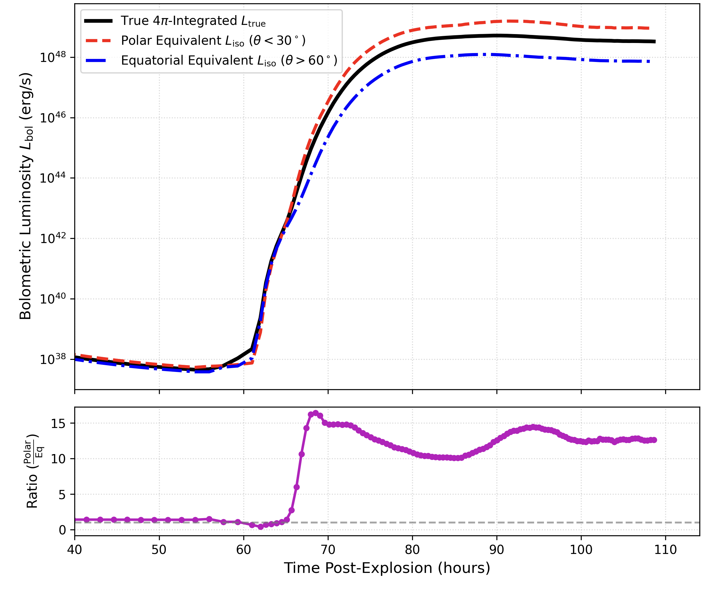
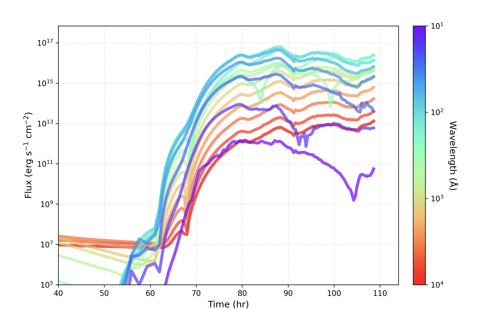

Institution: Academia Sinica Institute of Astronomy and Astrophysics (ASIAA)
Research focus: Three-dimensional and pulsating-star shock breakout, viewing-angle effects, and multi-wavelength light-curve diagnostics.
Future Research stages
Program framework
2 years and 4 months at ASIAA
The R&D Alternative Service period provides a longer research horizon for developing three-dimensional radiation-hydrodynamics models and connecting them with early-time transient observations.
InstitutionASIAA
Duration2 years 4 months
Direction3D shock breakout
Research direction
From 3D structure to time-dependent progenitors
01
Three-dimensional shock breakout
Quantify how asymmetric structures, turbulent surfaces, and viewing angle change the breakout luminosity and spectral evolution.
02
Pulsating-star shock breakout
Explore how pulsation-driven density variations and episodic mass loss imprint time-dependent structure on the breakout signal.
Current numerical setting
3D temperature structure & light curves
Three-dimensional temperature structure from the current simulation setup.

Viewing-angle dependence of the bolometric luminosity, comparing polar, equatorial, and angle-integrated signals.

Multi-wavelength light curves from the current calculation, showing the evolving spectral energy distribution.